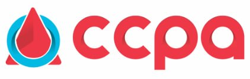

Começando a demonstrar
A criança está em fase de desenvolvimento dessa habilidade com apoio, repetição, gestos, imagens e ajuda do professor.
Preencha os dados do aluno e marque os indicadores. O report card abaixo será atualizado automaticamente. Para salvar, clique em Salvar / Imprimir PDF e escolha “Salvar como PDF” no navegador.
Sugestão de nome do arquivo: CCPA_Level1_Term1_Cecilia-Franco_Report-Card.pdf



Level 1 · Kindergarten · Term 1 — um retrato cuidadoso da participação, compreensão inicial e desenvolvimento da criança na rotina bilíngue.
A criança está em fase de desenvolvimento dessa habilidade com apoio, repetição, gestos, imagens e ajuda do professor.
A criança já demonstra essa habilidade em algumas situações, especialmente quando a rotina é conhecida e há apoio visual ou mediação.
A criança demonstra essa habilidade com frequência, segurança e autonomia dentro das propostas adequadas à idade.

| Observed area | Selected development stage |
|---|